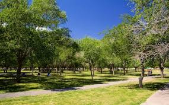

El monumento la X

El Monumento a la Mexicanidad, mejor conocido como La Equis, es un ícono de Ciudad Juárez que representa la cultura, historia y el mestizaje mexicano Ciudad Juárez, Chihuahua, en la frontera entre México y Estados Unidos, es hogar de un colosal monumento que destaca no solo por su estructura, sino también por un profundo significado cultural e histórico: el Monumento a la Mexicanidad, conocido popularmente como La Equis.
Inaugurado el 24 de mayo de 2013, este icónico monumento de 64 metros de altura y 800 toneladas de peso, se encuentra en la Plaza de la Mexicanidad, ubicada en el Parque Federal El Chamizal, una zona verde de aproximadamente 44 km² que constituye el principal pulmón de la ciudad. La plaza ha sido escenario de importantes eventos como conciertos y ferias, convirtiéndose en un punto de encuentro para los juarenses.

Este monumento es obra de Enrique Carbajal González, quien es más conocido como Sebastián como escultor. Esta construcción de acero en forma de X posee una altura de 60 metros (197 ft). Por lo tanto, es evidente desde ambas partes de la frontera. Durante la noche, es posible observar el monumento transformándose en una luminosa estructura.